Hardlopen en fietsen uit Apple Gezondheid
Cardio uit elke app verschijnt met routekaart, tempo en hartslagzones.
Krachttraining voor iPhone & Apple Watch
Log elke set in seconden, zie elk record en laat een AI-coach je week plannen. Met Replex wordt training vooruitgang die je kunt zien.
Gratis om te beginnen. Pro voegt de AI-coach, je eigen schema’s en je volledige geschiedenis toe.
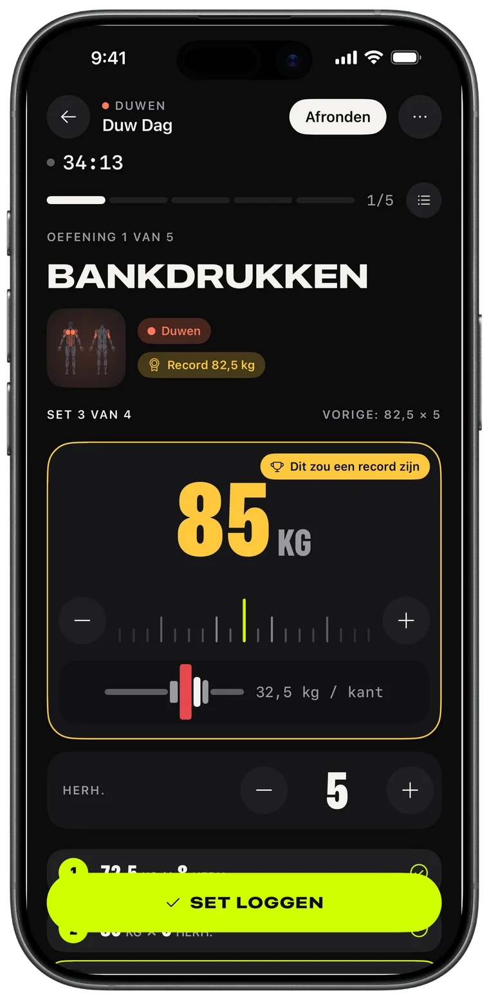
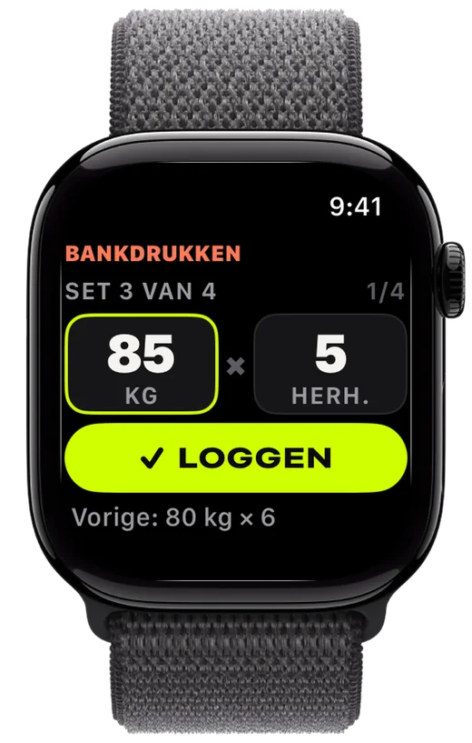
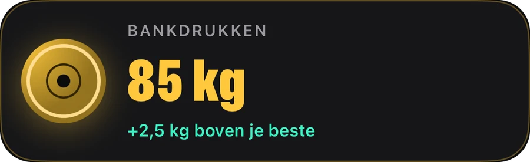
Loggen
Kies de schijven, log de set, verbeter je vorige keer. Replex onthoudt wat je hebt getild en zet de volgende set al klaar voordat jij zover bent.
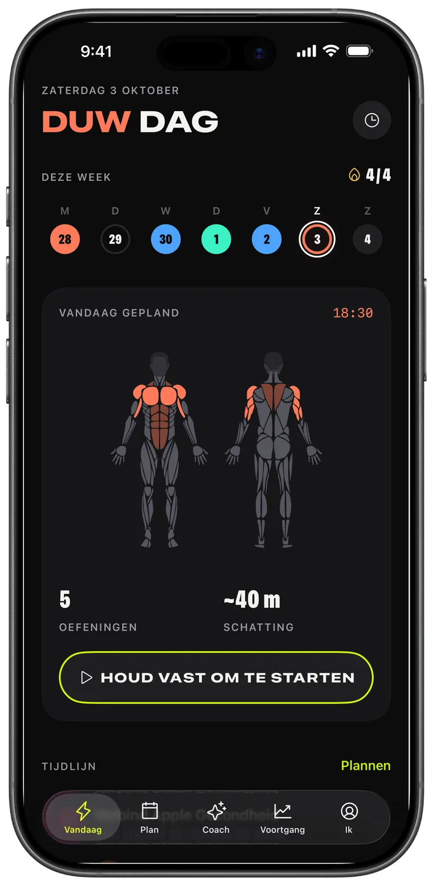
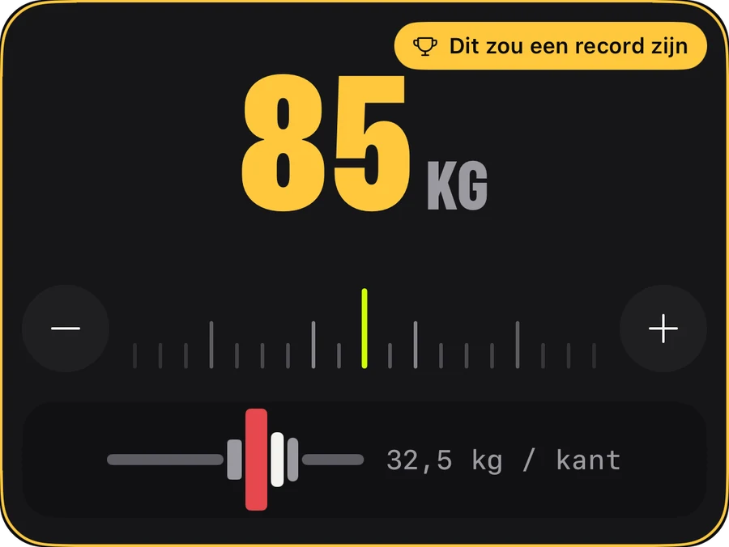
Apple Watch
Laat je telefoon in je tas. Draai aan de kroon voor gewicht en herhalingen, tik op LOGGEN en je iPhone blijft realtime in sync.
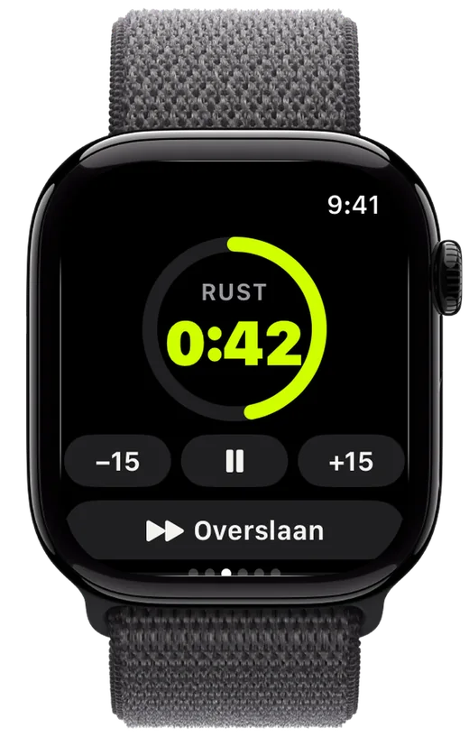
Voortgang
Volume dat week na week stijgt, elk record dat je zet en de trend van elke oefening – zodat je weet dat het werk loont.
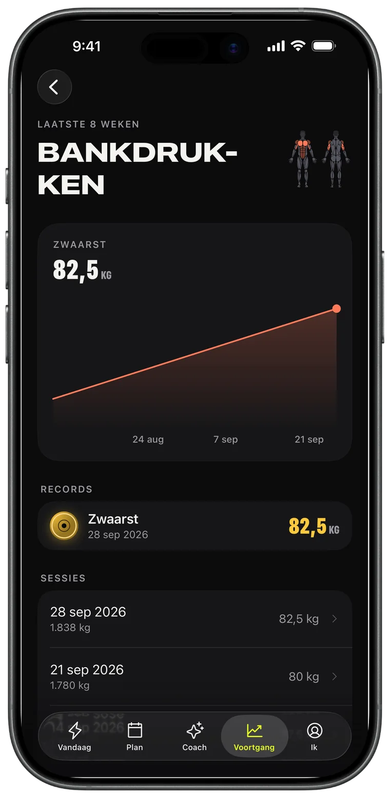
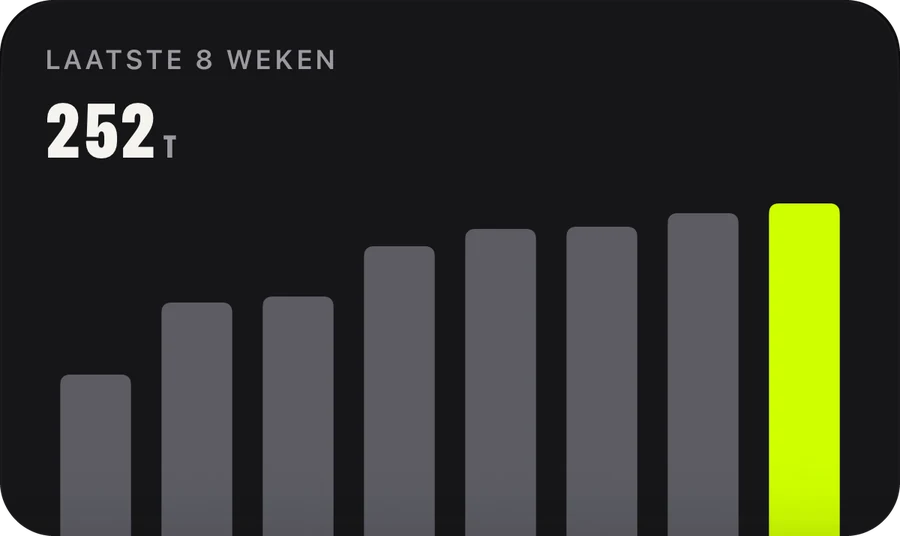
AI-coach · Pro
Vraag om een week en hij staat in je agenda. De Coach leest je echte training – sessies, records, hardloopsessies – en plant daaromheen.
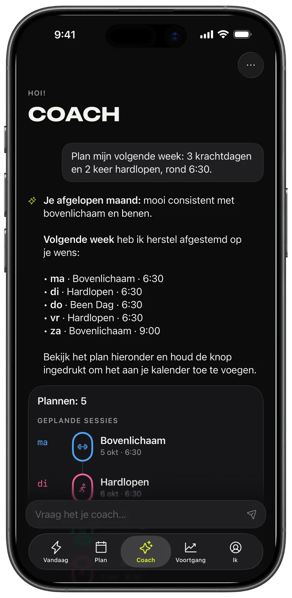
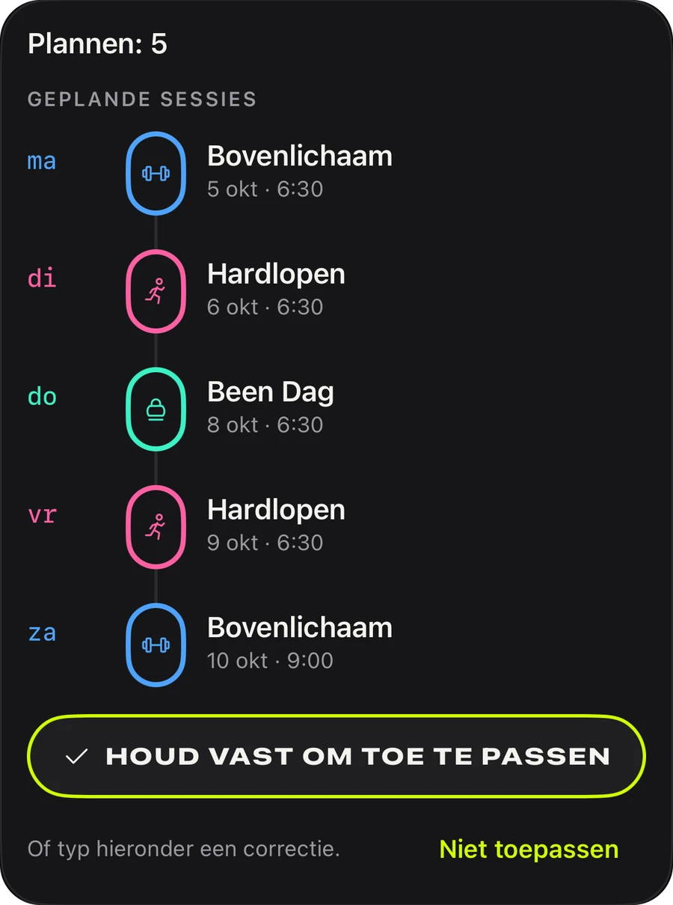
Schema’s
Push, pull, benen, upper/lower, full body: 44 kant-en-klare plannen om vandaag te beginnen, of bouw je eigen schema en laat het herhalen.
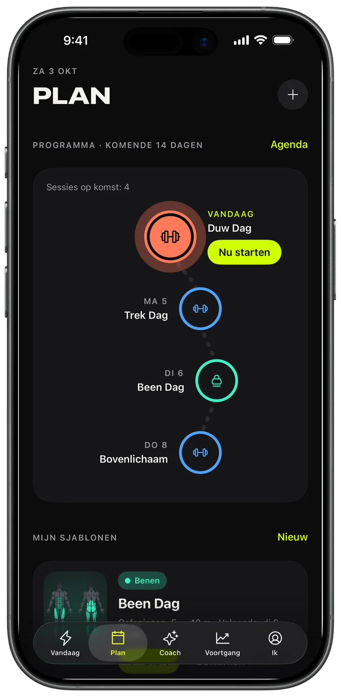
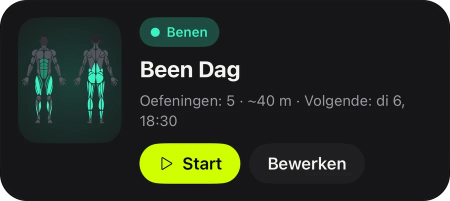
Delen
Elke afgeronde workout wordt een story-kaart met je volume, tijd en records. Post hem, of bewaar hem als bewijs.
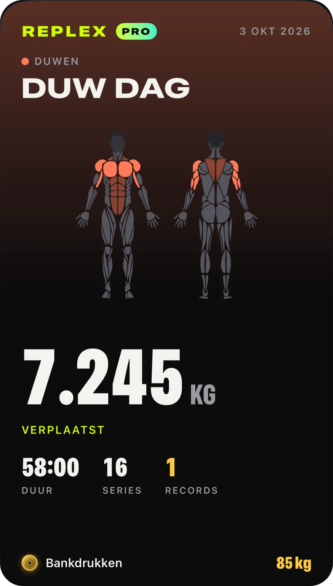
Cardio uit elke app verschijnt met routekaart, tempo en hartslagzones.
Je set, rust en hartslag op het toegangsscherm en in het Dynamic Island.
Workouts, sjablonen en schema’s op al je apparaten, alleen voor jou.
Zie vooraf wat een training traint, en wat je deze week al hebt geraakt.
Kilogram, pond of stone; oefeningen met lichaamsgewicht en op tijd zijn ingebouwd.
Licht of donker, en drie accentkleuren: Volt, Blauw en Roze, met bijpassende appsymbolen.
Alles wat je nodig hebt om te loggen en vooruit te gaan.
Voor lifters die vooruit plannen.
Pro is in de app verkrijgbaar per maand, per jaar of als eenmalige levenslange aankoop. Abonnementen kun je altijd opzeggen via je Apple Account.
Download Replex en log je eerste workout in minder dan een minuut.
Nee. Replex werkt volledig op iPhone. Met een Apple Watch kun je sets loggen, de rusttimer gebruiken en je hartslag volgen vanaf je pols.
Ja. Replex is gratis te gebruiken: loggen, de rusttimer, 5 schema’s met lichaamsgewicht, records van je recente trainingen en 5 workouts op Apple Watch. Replex Pro – per maand, per jaar of als eenmalige levenslange aankoop – voegt de AI-coach toe, alle 44 plannen, je eigen sjablonen en planning, je volledige geschiedenis en onbeperkt workouts op de Watch.
Op je apparaten en in je privé-iCloud. Workouts kunnen ook in Apple Gezondheid worden bewaard. De AI-coach ziet alleen wat hij nodig heeft om je te antwoorden, en alleen als jij het vraagt.
Kilogram, pond of stone, en de schijvencalculator volgt jouw eenheid.
54, waaronder Engels, Spaans, Portugees, Frans, Duits, Japans, Koreaans, Chinees, Arabisch en Hebreeuws.